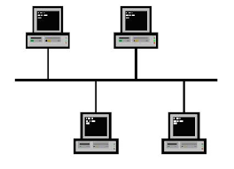

Una red en bus es aquella topología que se caracteriza por tener un único canal de comunicaciones (denominado bus, troncal o backbone) al cual se conectan los diferentes dispositivos.

volver á páxina principal